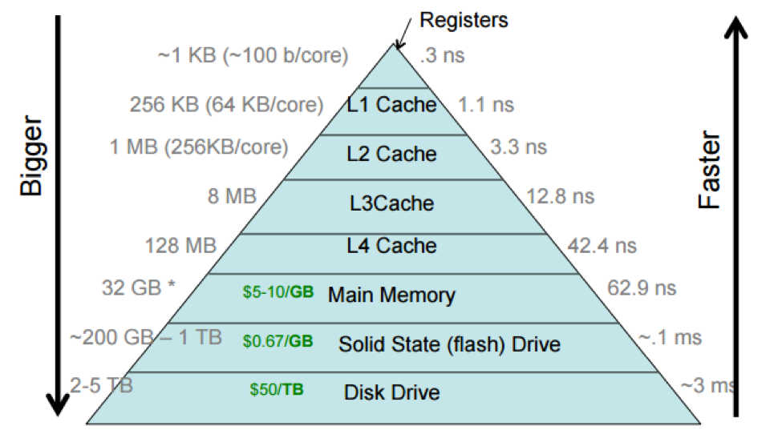

https://quick-bench.com/
10. Optimization#
First of all :
“Programmers waste enormous amounts of time thinking about, or worrying about, the speed of noncritical parts of their programs, and these attempts at efficiency actually have a strong negative impact when debugging and maintenance are considered. We should forget about small efficiencies, say about 97% of the time: premature optimization is the root of all evil. Yet we should not pass up our opportunities in that critical 3%.” - Donald Knuth
First, make your program correct, then measure, then optimize. Optimization can be achieved by just using compiler flags, by using already optimized libraries, and sometimes by being careful with our memory usage. Some low level techniques are better left to the compiler.
Some tips: https://news.ycombinator.com/item?id=39564632
Imagine some scenarios like:
Scenario 1 (Gaming): “Imagine you’re developing a high-performance game. A lag spike or a stutter isn’t just annoying; it ruins the user experience. Often, these aren’t due to bugs in the logic, but inefficiencies in how the code interacts with the computer’s hardware. How do we find and fix those bottlenecks?”
Scenario 2 (Scientific Computing/AI): “You’re running a complex simulation or training a large AI model. It’s predicted to take weeks to complete. Can we truly afford to wait that long? What if we could reduce that time to days, or even hours, without buying more hardware?”
Scenario 3 (Big Data): “Processing massive datasets is a common task. A simple operation on a small dataset might be instant, but scale it up to terabytes, and suddenly ‘simple’ becomes ‘hours’ or ‘days’. Optimization is the key to making these tasks feasible.”
10.1. Compiler flags#
See : https://gcc.gnu.org/onlinedocs/gcc/Optimize-Options.html
Some warnings:
Optimizations enabled by -ffast-math: https://kristerw.github.io/2021/10/19/fast-math/
Beware of fast-math: https://simonbyrne.github.io/notes/fastmath/
Beware of fast-math (Hackernews discussion): https://news.ycombinator.com/item?id=29201473
Sometimes just using compiler optimization flags with can improve dramatically our code performance. Normally, you want to run your code through several compiler flags to check for speed ups but also for possible uncovered bugs.
Compile without (-O0) and with optimization (-O3) the following code
and compare their runtime (this is a very old c-based code but still works):
// Credits : Ivan Pulido
/* Shows a way to do operations that require a specific order (e.g.,
* transpositions) while avoiding cache misses. */
#include <stdio.h>
#include <time.h>
#include <stdlib.h>
#define min( a, b ) ( ((a) < (b)) ? (a) : (b) )
int main(){
const int n = 512;
const int csize = 32;
float ***a, ***b;
clock_t cputime1, cputime2;
int i,j,k,ii,jj,kk;
// Allocating memory for array/matrix
a = malloc(n*sizeof(float **));
for (i=0; i<n; i++){
a[i] = malloc(n*sizeof(float*));
for (j=0; j<n; j++)
a[i][j] = malloc(n*sizeof(float));
}
b = malloc(n*sizeof(float **));
for (i=0; i<n; i++){
b[i] = malloc(n*sizeof(float*));
for (j=0; j<n; j++)
b[i][j] = malloc(n*sizeof(float));
}
// Filling matrices with zeros
for(i=0; i<n; ++i)
for (j=0; j<n; ++j)
for (k=0; k<n; ++k)
a[i][j][k] = 0;
for(i=0; i<n; ++i)
for (j=0; j<n; ++j)
for (k=0; k<n; ++k)
b[i][j][k] = 0;
// Direct (inefficient) transposition
cputime1 = clock();
for (i=0; i<n; ++i)
for (j=0; j<n; ++j)
for (k=0; k<n; ++k)
a[i][j][k] = b[k][j][i];
cputime2 = clock() - cputime1;
printf("Time for transposition: %f\n", ((double)cputime2)/CLOCKS_PER_SEC);
// Transposition using cache-blocking
cputime1 = clock();
for (ii=0; ii<n; ii+=csize)
for (jj=0; jj<n; jj+=csize)
for (kk=0; kk<n; kk+=csize)
for (i=ii; i<min(n,ii+csize-1); ++i)
for (j=jj; j<min(n,jj+csize-1); ++j)
for (k=kk; k<min(n,kk+csize-1); ++k)
a[i][j][k] = b[k][j][i];
cputime2 = clock() - cputime1;
printf("Time for transposition: %f\n", ((double)cputime2)/CLOCKS_PER_SEC);
return 0;
}
When you compile without optimization and execute, you will get something like
gcc -O0 cache_blocking.c
./a.out
But, if you use optimization, you can get an important improvement
gcc -O2 cache_blocking.c
./a.out
Actually we can compare all optimization levels to check their impact:
for level in 0 1 2 3; do echo "level: $level"; gcc -O$level cache_blocking.c; ./a.out; done
Be careful when using -O3: it activates some unsafe math optimizations
that will not respect IEEE754.
10.1.1. Exercise#
Vary both the matrix size and the cache size to compute both times. Plot the results on two different 3d plots (in gnuplot use splot). Repeat for -O0 and -O2
10.2. Memory layout#
The memory layout should always be taken into account since cache misses will greatly affect a program performance. Always measure with a profiler and if possible with cachegrind in order to detect possible excessive cache misses.
See Cache Nightmares: https://www.youtube.com/watch?v=xFMXIgvlgcY
Being nice to the cache comes from the modern cpu architecture, as shown in the next figure
L1, L2 and L3 caches. Source https://medium.com/software-design/why-software-developers-should-care-about-cpu-caches-8da04355bb8a

The relative bandwidth across the different cpu and momory controllers explain why it is important to have the processed data as much time as possible in the cache
Relative bandwidth across different cpu and computer parts. Credit: <https://cs.brown.edu/courses/csci1310/2020/assign/labs/lab4.html
Since c/c++ store matrices in row major order, then accesing the memory in the same way will benefit the cache and therefore increases our program performance.
The following code shows how a simple index change in a matrix operation could have a huge impact on the app performance:
// Credit Ivan Pulido
#include <stdio.h>
#include <stdlib.h>
#include <time.h>
int main(){
const int n = 256;
clock_t cputime1, cputime2;
float ***a;
int i,j,k;
// Allocating memory for array/matrix
a = malloc(n*sizeof(float **));
for (i=0; i<n; i++){
a[i] = malloc(n*sizeof(float*));
for (j=0; j<n; j++)
a[i][j] = malloc(n*sizeof(float));
}
cputime1 = clock();
for (k=0; k<n; ++k)
for (j=0; j<n; ++j)
for (i=0; i<n; ++i)
a[i][j][k] = 1.0;
cputime2=clock() - cputime1;
printf("Time with fast index inside: %lf\n", ((double)cputime2)/CLOCKS_PER_SEC);
cputime1 = clock();
for(i=0; i<n; ++i)
for (j=0; j<n; ++j)
for (k=0; k<n; ++k)
a[i][j][k] = 2.3;
cputime2=clock() - cputime1;
printf("Time with fast index outside: %lf\n", ((double)cputime2)/CLOCKS_PER_SEC);
// Clearing memory
for (i=0; i<n; i++){
for (j=0; j<n; j++)
free(a[i][j]);
free(a[i]);
}
free(a);
return 0;
}
To compile,
gcc cache_lines.c
./a.out
Exercise
Vary again the matrix size. Is the time difference important for all sizes? plot it.
Explore the effect of different optimization flags
10.2.1. Blocking multiplication#
See https://malithjayaweera.com/2020/07/blocked-matrix-multiplication/
Blocking techniques are neat examples that show how being aware of the cache allows you to increase the performance dramatically. For instance, the following code shows a concrete example where a blocking techinque is used to compute the transpose of a matrix, with a important performance advantage:
// Credits: Ivan Pulido
/* Shows a way to do operations that require a specific order (e.g.,
* transpositions) while avoiding cache misses. */
#include <stdio.h>
#include <time.h>
#include <stdlib.h>
#define min( a, b ) ( ((a) < (b)) ? (a) : (b) )
int main(){
const int n = 512;
const int csize = 32;
float ***a, ***b;
clock_t cputime1, cputime2;
int i,j,k,ii,jj,kk;
// Allocating memory for array/matrix
a = malloc(n*sizeof(float **));
for (i=0; i<n; i++){
a[i] = malloc(n*sizeof(float*));
for (j=0; j<n; j++)
a[i][j] = malloc(n*sizeof(float));
}
b = malloc(n*sizeof(float **));
for (i=0; i<n; i++){
b[i] = malloc(n*sizeof(float*));
for (j=0; j<n; j++)
b[i][j] = malloc(n*sizeof(float));
}
// Filling matrices with zeros
for(i=0; i<n; ++i)
for (j=0; j<n; ++j)
for (k=0; k<n; ++k)
a[i][j][k] = 0;
for(i=0; i<n; ++i)
for (j=0; j<n; ++j)
for (k=0; k<n; ++k)
b[i][j][k] = 0;
// Direct (inefficient) transposition
cputime1 = clock();
for (i=0; i<n; ++i)
for (j=0; j<n; ++j)
for (k=0; k<n; ++k)
a[i][j][k] = b[k][j][i];
cputime2 = clock() - cputime1;
printf("Time for transposition: %f\n", ((double)cputime2)/CLOCKS_PER_SEC);
// Transposition using cache-blocking
cputime1 = clock();
for (ii=0; ii<n; ii+=csize)
for (jj=0; jj<n; jj+=csize)
for (kk=0; kk<n; kk+=csize)
for (i=ii; i<min(n,ii+csize-1); ++i)
for (j=jj; j<min(n,jj+csize-1); ++j)
for (k=kk; k<min(n,kk+csize-1); ++k)
a[i][j][k] = b[k][j][i];
cputime2 = clock() - cputime1;
printf("Time for transposition: %f\n", ((double)cputime2)/CLOCKS_PER_SEC);
return 0;
}
Compiling and running give the following results
gcc cache_blocking.c
./a.out
The second one shows how being cache friendly really helps the performance.
Exercise
Plot the time with the direct and the blocking approaches as functions of size, using
-O2. What can you conclude?
10.3. Introduction to gnu parallel#
Up to now we have been running each program serially. We needed to run several parameters combinations, but we were always running them one after the other even though our computer is multicore. Here we will learn a tool, called gnu parallel, which allows you to run several tasks in parallel. Imagine that you have 10,000 data files to process. Each takes 30
seconds. That’s 83 hours of sequential processing - over 3 days! With GNU Parallel
on your 8-core laptop, you can finish in 10 hours. Let’s see how.
GNU Parallel is a powerful command-line tool that allows you to execute multiple jobs in parallel, making efficient use of multiple CPU cores and dramatically reducing execution time for batch operations.
10.3.1. Basic Syntax#
parallel [options] command ::: arguments
parallel [options] command :::: input-file
10.3.2. Basic Examples#
10.3.2.1. Running Multiple Commands in Parallel#
# Execute multiple independent commands
parallel ::: "echo 'Task 1'" "sleep 2; echo 'Task 2'" "echo 'Task 3'"
# Download multiple files simultaneously
parallel wget ::: \
https://example.com/file1.zip \
https://example.com/file2.zip \
https://example.com/file3.zip
10.3.2.2. Processing Files in Parallel#
# Compress multiple files
parallel gzip ::: *.txt
# Convert images with ImageMagick
parallel convert {} {.}.jpg ::: *.png
# Process log files
parallel "grep 'ERROR' {} > {.}_errors.log" ::: /var/log/*.log
10.3.2.3. Parameter Combinations#
# Multiple parameter sets
parallel echo "Processing {1} with {2}" ::: file1 file2 file3 ::: option-a option-b
# Cartesian product of parameters
parallel "convert {1} -resize {2} resized_{1}" ::: *.jpg ::: 50% 75% 100%
# Using input files for parameters
echo -e "param1\nparam2\nparam3" | parallel echo "Processing: {}"
10.3.3. Advanced Examples#
10.3.3.1. System Administration#
# Check disk usage on multiple servers
parallel -j10 "ssh {} 'df -h'" ::: server1 server2 server3
# Update packages on multiple systems
parallel "ssh {} 'sudo apt update && sudo apt upgrade -y'" ::: \
user@server1 user@server2 user@server3
10.3.3.2. Data Processing#
# Process CSV files with different tools
parallel "cut -d',' -f{2} {1} > {1.}_{2}.csv" ::: data*.csv ::: 1 2 3 4
# Run analysis scripts with different parameters
parallel "./analyze.py --input {} --threshold {2}" ::: *.dat ::: 0.1 0.5 0.9
10.3.3.3. Batch Image/Video Processing#
# Resize images to multiple sizes
parallel "convert {} -resize {2}x{2} {1/.}_{2}.{1/}" ::: *.jpg ::: 100 200 300
# Extract video thumbnails at different timestamps
parallel "ffmpeg -i video.mp4 -ss {1} -vframes 1 thumb_{1}.jpg" ::: 00:10 00:30 01:00
10.3.4. Key Options and Features#
10.3.4.1. Controlling Parallelism#
# Limit number of parallel jobs
parallel -j4 command ::: args
# Use all available CPU cores
parallel -j0 command ::: args
# Run jobs sequentially (useful for debugging)
parallel -j1 command ::: args
10.3.4.2. Progress and Monitoring#
# Show progress bar
parallel --progress command ::: args
# Show which command is running
parallel --verbose command ::: args
# Combine both
parallel --progress --verbose command ::: args
10.3.4.3. Error Handling#
# Continue on errors, collect failed jobs
parallel --keep-order --joblog logfile command ::: args
# Retry failed jobs
parallel --retry-failed --joblog logfile
# Resume interrupted jobs
parallel --resume --joblog logfile command ::: args
10.3.5. Comparison with Other Tools#
10.3.5.1. vs. xargs -P#
GNU Parallel Advantages:
More intuitive syntax for complex parameter combinations
Better job control and monitoring
Built-in resume functionality
Superior error handling and logging
More flexible input methods
# xargs approach
echo -e "file1\nfile2\nfile3" | xargs -P4 -I{} gzip {}
# GNU Parallel approach (cleaner)
parallel gzip ::: file1 file2 file3
10.3.5.2. vs. Bash Background Jobs (&)#
GNU Parallel Advantages:
Automatic job limiting (prevents system overload)
Built-in progress monitoring
Better error collection and handling
Automatic cleanup of completed jobs
# Bash background jobs (manual management)
for file in *.txt; do
gzip "$file" &
done
wait
# GNU Parallel (automatic management)
parallel gzip ::: *.txt
10.3.5.3. vs. Make -j#
GNU Parallel Advantages:
No need to write Makefiles for simple parallel tasks
Dynamic job creation from command-line arguments
Better suited for data processing pipelines
More flexible parameter handling
10.3.5.4. vs. Custom Shell Scripts#
GNU Parallel Advantages:
No need to write custom parallel execution logic
Built-in job queuing and resource management
Extensive logging and monitoring capabilities
Cross-platform compatibility
10.3.6. Key Advantages of GNU Parallel#
Simplicity: Easy to parallelize existing sequential commands
Flexibility: Handles complex parameter combinations effortlessly
Resource Management: Automatically manages CPU and memory usage
Robustness: Built-in error handling, logging, and resume capabilities
Monitoring: Real-time progress tracking and verbose output options
Scalability: Can distribute jobs across multiple machines
Compatibility: Works with any command-line tool
Performance: Significant speedup for I/O and CPU-intensive tasks
10.3.7. Best Practices#
Start with low parallelism (
-j2or-j4) and increase graduallyUse
--dry-runto test commands before executionMonitor system resources to avoid overloading
Use
--joblogfor long-running tasksTest with small datasets before processing large amounts of data
Consider I/O bottlenecks when setting parallelism levels
10.3.8. Performance Example#
Sequential processing of 100 files:
time for f in file*.txt; do gzip "$f"; done
# Real: 2m30s
Parallel processing with GNU Parallel:
time parallel gzip ::: file*.txt
# Real: 0m25s (10x speedup on 8-core system)
GNU Parallel is an essential tool for anyone working with batch processing, data analysis, or system administration tasks where parallel execution can provide significant performance improvements.
Exercise Plot the Run the cache lines examples for several optimization levels and matrix sizes. Run the simulations in parallel using gnu parallel.
10.4. How to model simple matrices?#
It depends greatly from the problem. But for the typical applications of
vector and matrix computations, we can expect that homogeneous and
contiguous arrays are the data structures to go. In that case, it is
advisable to use std::vector as the go to data struct since it is as
efficient as an primitive arra, handles automatically the dynamic memory
in the heap, and plays nice with the C++ STL.
A primitive static array is limited by the stack. Play with the values of M and N in the following code until you get a seg fault just by running the code.
#include <iostream>
int main(void)
{
const int M = 7000;
const int N = 500;
double data[M][N] = {{0.0}};
std::cout << data[M/2][N/2] << std::endl;
return 0;
}
Is the maximum size related somehow with the output of the command
ulimit -s ?
To be able to use more memory, you could better use dynamic memory with
primitive arrays, but you will have to manage the new/delete parts in
your code. Check that foloowing code does not die on the same sizes as
the previous one
#include <iostream>
int main(void)
{
const int M = 7000;
const int N = 500;
double **data = nullptr;
data = new double *[M];
for (int ii = 0; ii < M; ++ii){
data[ii] = new double [N];
}
std::cout << data[M/2][N/2] << std::endl;
for (int ii = 0; ii < M; ++ii){
delete [] data[ii];
}
delete [] data;
return 0;
}
But be careful, memory obtained using double/multiple pointers is not guaranteed to be contiguous, so it is much better to just ask for a large one-dimensional array and just model the 2D shape with smart indexes
#include <iostream>
int main(void)
{
const int M = 7000;
const int N = 500;
double *data = nullptr;
data = new double [M*N];
// [id][jd] -> id*N + jd
std::cout << data[M*N/2 + N/2] << std::endl;
delete [] data;
return 0;
}
This is an example of a 2d array actually stored as a 1d array in memory:

And this is the illustration of the mapping that allows us to go to/from different dimensions:

Finally, to avoid managing manually the memory, it is much better to use
std::vector,
#include <iostream>
#include <vector>
int main(void)
{
const int M = 7000;
const int N = 500;
std::vector<double> data;
data.resize(M*N);
// [id][jd] -> id*N + jd
std::cout << data[M*N/2 + N/2] << std::endl;
return 0;
}
Exercise
Test the stack program to find the maximum matrix size you can use
Do the same for the last one using a vector, what is the maximum size you can reserve?
10.5. Using scientific libraries#
Scientific libraries are written by people with deep knowledge of the computer and algorithms internals , therefore saving developer time and resources. One should always try to use a established scientific library instead of writting everything from scratch. Sometimes even automatic parallelization comes for free. Examples are the Intel or AMD math libraries, the Cuda toolkit for programming on nvidia cards, and so on.
The following examples shows the time taken to transpose a matrix using a traditional approach, a blocking approach , and the eigen c++ library, giving the following results:
Time for memory allocation: 0.315618
Time for filling: 3.607817
Time for direct transposition: 2.870691
Time for blocked transposition: 0.380954
Time for transposition with eigen: 0.031344
Time for transposition with copy in eigen: 0.310033
Time for transposition with full copy in eigen: 3.339495
-2999.9
-2999.9
15200.1
15200.1
15200.1
This shows, for instance, that eigen in some cases is not even computing the transpose but just creating an expression to access the original matrix, hence the huge speeedup and also the slow down when fully creating a copy.
The code used is
#include <cstdio>
#include <ctime>
#include <cstdlib>
#include <cassert>
#include <iostream>
#include <Eigen/Dense>
#define min( a, b ) ( ((a) < (b)) ? (a) : (b) )
bool verify_transpose(float ** m1, float ** m2, int n);
template <class T, class U>
bool verify_transpose(T & m1, U & m2, int n);
int main(){
const int n = 12000;
const int csize = 8;
float **a, **b;
clock_t cputime1, cputime2;
int i,j,k,ii,jj,kk;
// Allocating memory for array/matrix
cputime1 = clock();
a = new float * [n];
for (i=0; i<n; i++){
a[i] = new float [n];
}
b = new float * [n];
for (i=0; i<n; i++){
b[i] = new float[n];
}
// eigen matrices
Eigen::MatrixXf M2 = Eigen::MatrixXf::Constant(n, n, 0.0);
cputime2 = clock() - cputime1;
std::printf("Time for memory allocation: %f\n", ((double)cputime2)/CLOCKS_PER_SEC);
// Filling matrices with zeros
cputime1 = clock();
for(i=0; i<n; ++i)
for (j=0; j<n; ++j) {
a[i][j] = 2.3*i + j + 0.1;
}
for(i=0; i<n; ++i)
for (j=0; j<n; ++j) {
b[i][j] = -2.3*i + 1.8*j + 0.1;
M2(i, j) = 2.3*i + j + 0.1;
}
cputime2 = clock() - cputime1;
std::printf("Time for filling: %f\n", ((double)cputime2)/CLOCKS_PER_SEC);
// Direct (inefficient) transposition
cputime1 = clock();
for (i=0; i<n; ++i)
for (j=0; j<n; ++j)
a[i][j] = b[j][i];
cputime2 = clock() - cputime1;
std::printf("Time for direct transposition: %f\n", ((double)cputime2)/CLOCKS_PER_SEC);
assert(verify_transpose(a, b, n));
// Transposition using cache-blocking
cputime1 = clock();
for (ii=0; ii<n; ii+=csize)
for (jj=0; jj<n; jj+=csize)
for (i=ii; i<min(n,ii+csize-1); ++i)
for (j=jj; j<min(n,jj+csize-1); ++j)
a[i][j] = b[j][i];
assert(verify_transpose(a, b, n));
cputime2 = clock() - cputime1;
std::printf("Time for blocked transposition: %f\n", ((double)cputime2)/CLOCKS_PER_SEC);
// eigen
cputime1 = clock();
//M1.noalias() = M2.transpose();
auto M1{M2.transpose()};
assert(verify_transpose(M1, M2, n));
cputime2 = clock() - cputime1;
std::printf("Time for transposition with eigen: %f\n", ((double)cputime2)/CLOCKS_PER_SEC);
cputime1 = clock();
auto M3 = M2.transpose();
cputime2 = clock() - cputime1;
std::printf("Time for transposition with copy in eigen: %f\n", ((double)cputime2)/CLOCKS_PER_SEC);
cputime1 = clock();
Eigen::MatrixXf M4 = M2.transpose();
cputime2 = clock() - cputime1;
std::printf("Time for transposition with full copy in eigen: %f\n", ((double)cputime2)/CLOCKS_PER_SEC);
assert(verify_transpose(M1, M2, n));
assert(verify_transpose(M3, M2, n));
assert(verify_transpose(M4, M2, n));
// use data
M1(n/4, n/2) = 0.9876;
M2(n/2, n/4)= 9.88;
std::cout << a[n/2][n/2] << std::endl;
std::cout << b[n/2][n/2] << std::endl;
std::cout << M1(n/2,n/3) << std::endl;
std::cout << M2(n/3,n/2) << std::endl;
std::cout << M3(n/2,n/3) << std::endl;
return 0;
}
bool verify_transpose(float ** m1, float ** m2, int n)
{
for (int ii = 0; ii < n; ++ii) {
for (int jj = 0; jj < n; ++jj) {
if (m1[ii][jj] != m2[jj][ii]) {
return false;
}
}
}
return true;
}
template <class T, class U>
bool verify_transpose(T & m1, U & m2, int n)
{
for (int ii = 0; ii < n; ++ii) {
for (int jj = 0; jj < n; ++jj) {
if (m1(ii, jj) != m2(jj, ii)) {
return false;
}
}
}
return true;
}
10.6. Other optimization techniques#
There are other techniques sometimes applied in very speficic situations, like
Loop interchanges
Loop unrolling
for(int ii = 0; ii < n; ii++) {
array[ii] = 2*ii;
}
for(int ii = 0; ii < n; ii += 3) {
array[ii] = 2*ii;
array[ii+1] = 2*(ii+1);
array[ii+2] = 2*(ii+2);
}
Loop Fusion/Fision
Prefetching
Floating point division
Vectorization
etc
In general those techniques can applied after a careful determination that they are really needed, and sometimes the compilers already apply them at some optimization levels. Therefore it is advisable to focus on the clarity of the program first and let the compiler do its job.